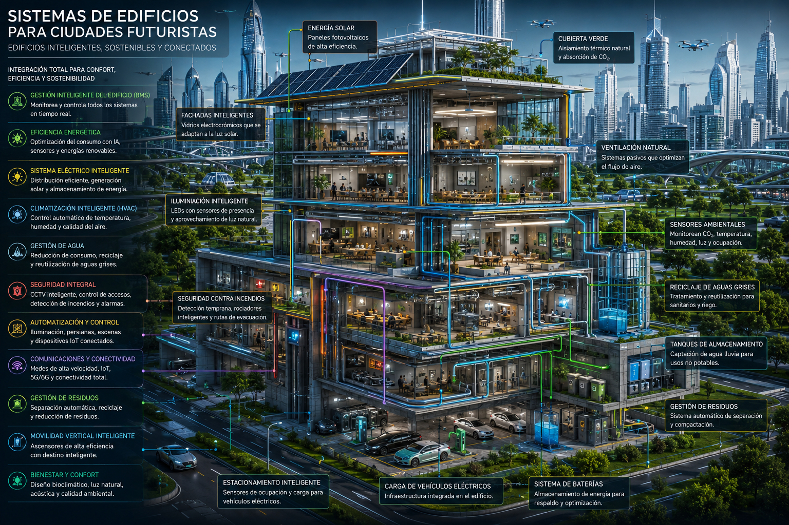
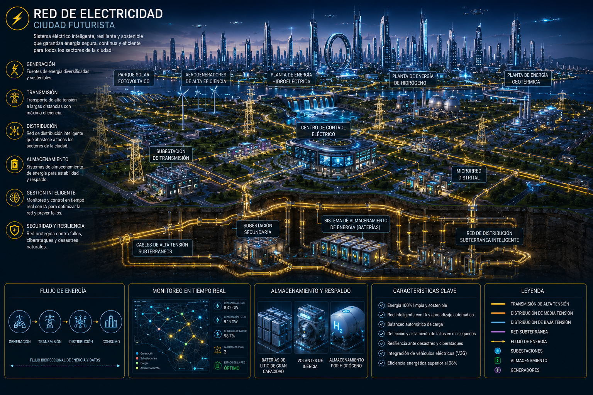
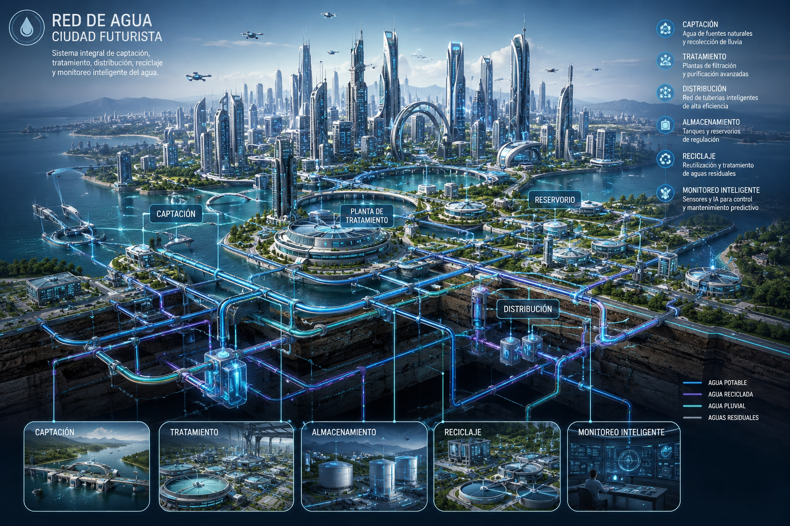
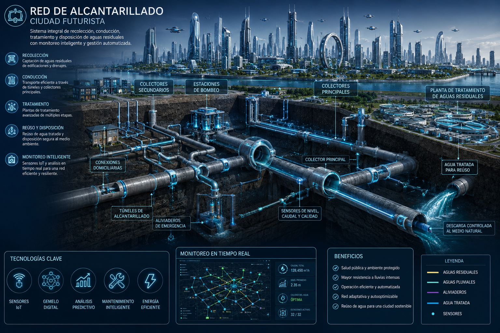
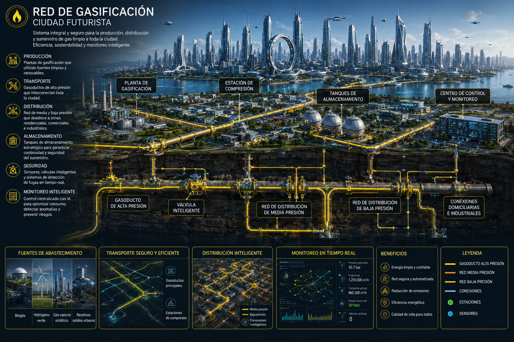
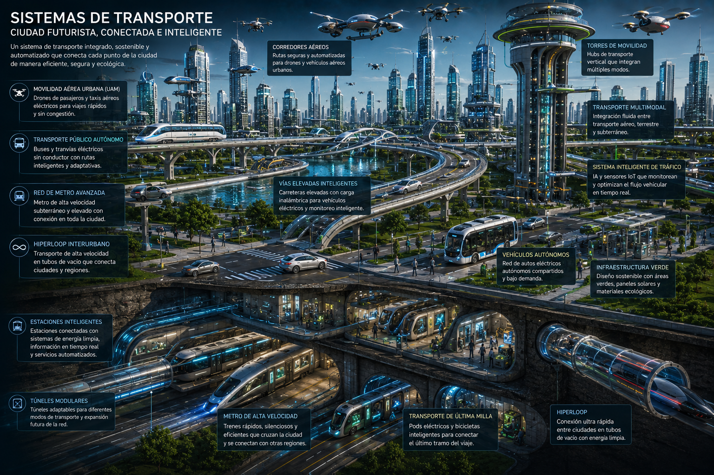
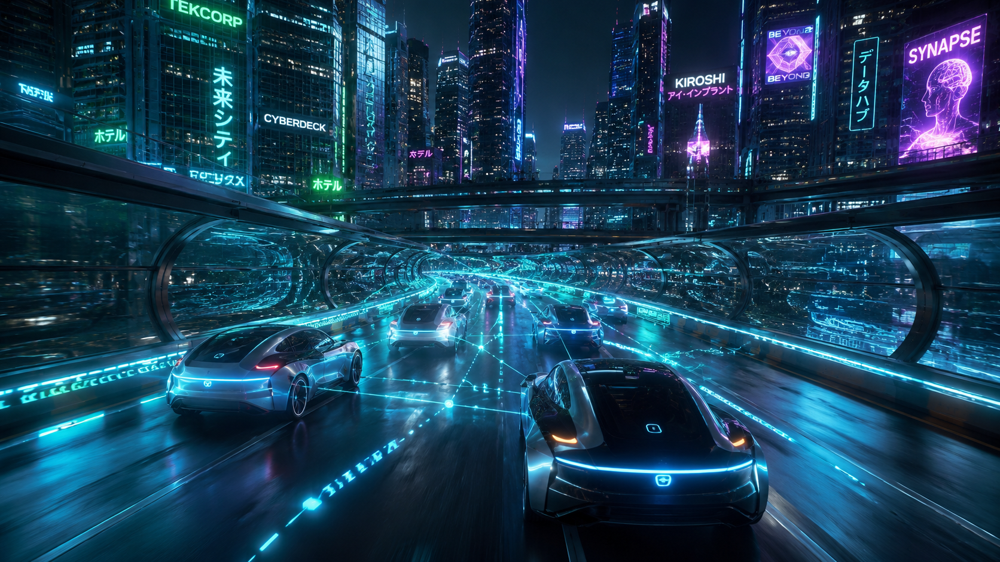
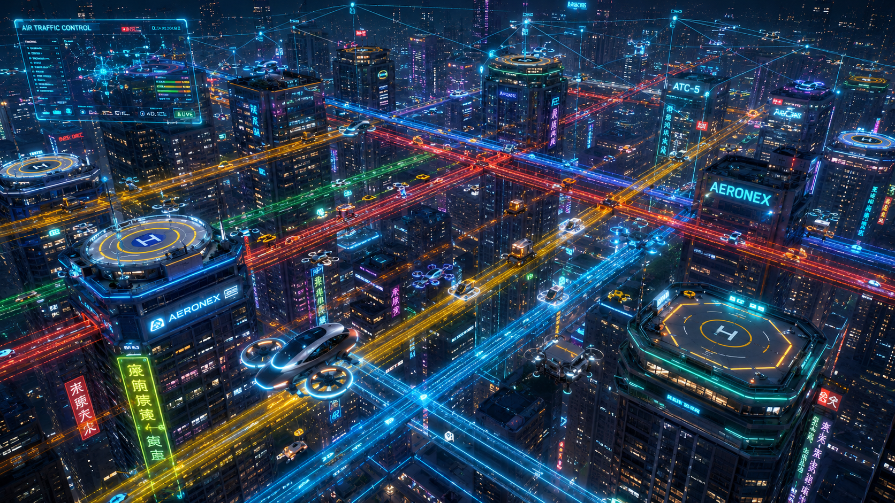
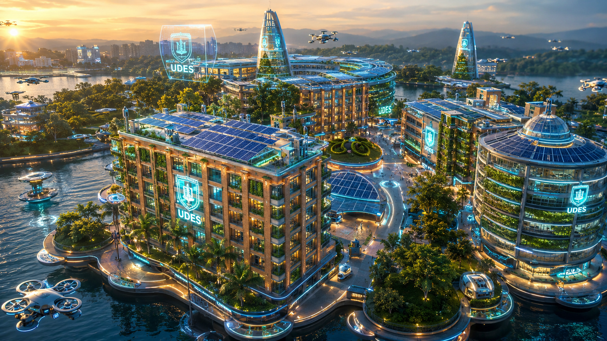
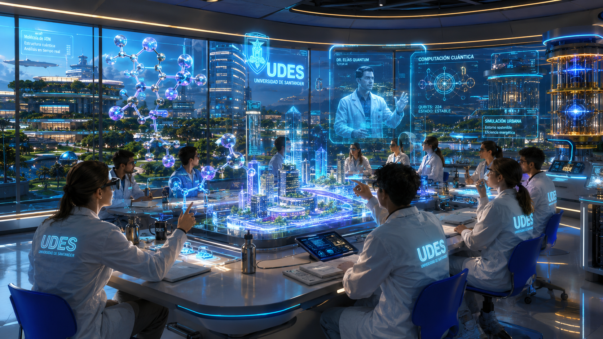

Proyecto de Desarrollo Web · UDES 2026
Una visión de la metrópolis inteligente del año 2085: arquitectura biointeligente, energía limpia, movilidad autónoma y la UDES liderando el conocimiento del mañana.
La ciudad del futuro organiza su territorio en cuatro grandes zonas funcionales, conectadas por redes de datos y transporte inteligente, con cero huella de carbono como meta para 2085.
Los rascacielos de vidrio curvo integran IA ambiental: ajustan temperatura, iluminación y ventilación en tiempo real según ocupación y clima. Cada fachada genera energía con células fotovoltaicas de tercera generación.

Tres pilares sostienen la vida urbana del futuro: energía limpia ilimitada, agua purificada en ciclo cerrado y residuos convertidos en recurso. Todos monitoreados en tiempo real por IA distribuida.



Gasoductos de última generación distribuyen hidrógeno verde y gas sintético a toda la ciudad. Tres domos esféricos de almacenamiento regulan la presión para los 4 millones de hogares. Válvulas inteligentes previenen fugas con sensores moleculares.

IMAGEN · RED DE GASIFICACIÓN Infografía red de gasificación ciudad futurista costeraLa ciudad del futuro elimina los atascos mediante redes de transporte multicapa: subterráneo, superficial y aéreo, todo coordinado por una IA central de movilidad que optimiza flujos en milisegundos.
El tren de levitación magnética conecta los 12 distritos en menos de 8 minutos. Las cápsulas Hyperloop subterráneas alcanzan 900 km/h y transportan hasta 200 pasajeros en silencio total.
Los drones colectivos de 20 plazas operan rutas aéreas predefinidas entre los nodos de mayor demanda, reduciendo el tiempo de viaje urbano en un 70%.

Los vehículos autónomos de nivel 5 se comunican entre sí y con la infraestructura vial en tiempo real. El concepto de "semáforo" desaparece: los cruces se gestionan dinámicamente sin paradas.
Carriles subterráneos exclusivos para vehículos eléctricos autónomos permiten velocidades de hasta 180 km/h en trayectos interzonales.

Corredores aéreos tridimensionales organizados en 6 altitudes distintas separan drones de carga, taxis voladores y transporte colectivo. Un sistema de control de tráfico aéreo urbano (UTMS) gestiona hasta 50.000 aeronaves simultáneamente.
Las plataformas de despegue vertical (vertiports) en cada edificio de más de 20 pisos permiten acceso directo desde los hogares.

La Universidad de Santander lidera la transformación del conocimiento en la ciudad futurista. Sus campus flotantes, laboratorios cuánticos y aulas de realidad inmersiva forman a los constructores del mundo del mañana.

Con más de 200 años de historia proyectada hacia el futuro, la Universidad de Santander se convierte en el núcleo intelectual de la ciudad futurista. Sus programas de Ingeniería de Software e IA son referentes mundiales.
